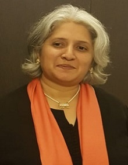
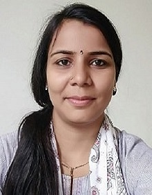
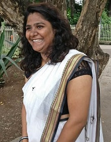

Archana Neginhal
 "Archana is the Director of School of Life. Her experience in the field of Education spans multiple decades. She is the Executive Director and Founder of Kaleidoscope India, an organization that works towards creating curriculum content that is rooted in the local context. She was the Director of Jyotirmay International School for 5 years.""
Archana is a trained Waldorf teacher for grade school and was the Principal of The Blue Mountains School in Ooty, for 5 years. This is a 55 year old institute inspired by the teachings of J. Krishnamurti. Archana was a Teacher educator at Sholai School and CLOAAT Centre for Learning, Organic Agriculture and Appropriate Technologies, Kodaikanal, Tamil Nadu, for 4 years where she set up their teacher training centre. As a trained University Guidance Counselor, Archana has placed almost 50 young adults in high schools and universities, both in India and abroad. She is also a Master Trainer for an International Diploma for Teachers and Trainers.
Archana’s passion for education also sees her as a Health Care and Education Consultant with African Humanitarian Action based in Addis Ababa, Ethiopia, and Dubai, UAE. She is also a member of the Council for Creative Education, Tampere, Finland. In addition to all the hats worn by Archana, she is also a teacher for Business Studies, Economics, Global Perspectives, Development Studies, Sociology, Geography, Environmental Management, Food and Nutrition, Food Studies and Theory of Knowledge.
Archana’s cool and collected exterior belies the laser focus she has on creating an environment where children thrive and get the best possible foundation for life. She is truly our children’s champion.
Farida Nimakwala
 Farida is the Principal of School of Life. Armed with a then-fashionable MBA in Finance, she started her career in the investment advisory space. However, her life’s real mission and passion came along in the form of the pursuit of what could be her child’s ideal ‘education’. The dearth of options and the gaping lacunae that exposed themselves were both alarming and disturbing to her as a parent.
Farida is the Principal of School of Life. Armed with a then-fashionable MBA in Finance, she started her career in the investment advisory space. However, her life’s real mission and passion came along in the form of the pursuit of what could be her child’s ideal ‘education’. The dearth of options and the gaping lacunae that exposed themselves were both alarming and disturbing to her as a parent.
Providentially, the Montessori method came her way then as an answer. An answer that has helped her ask many more questions since, about education and its place in life, and has driven her to seek better and more comprehensive answers to this enigma, answers that are worthy of our children and their well being.
This journey has led Farida to embark on various endeavors from formal certification in Montessori, Teachers Training, the opening of her own school - House of Children - independently and within the ambit of a progressive High School, to jumping into a learning space with an open canvas of innovation and exploration. Places that gave her the freedom to follow the child and help them grow by the natural laws of nature, prepare them for life - by inspiring a love for learning and a readiness to change the world for the good.
Farida's responsibilities of Principal, Founder, Teacher and Guide have thrown her way the rare privilege of working with children- from the curious little ones of two and three to the blossoming, burgeoning teenagers of sixteen, as also the promising persevering adults who are not yet too old to learn. She has tried to do her bit in widening of horizons through the study and teaching of topics and issues within myriad subjects, from Language to Mathematics, Business Studies to Human Culture, Practical life lessons to the Sciences; and learnt much in this attempt to ‘teach’.
"It has been a quest worth taking
And so Farida continues down this road with the inner satisfaction that any effort in the direction of understanding and unraveling the child will only take us further in being able to serve them."
Krishan Singh
Krishan is the head of the Science department and the Senior School Coordinator at School of Life. This is what he has to say about his journey in the field of education.
“Science is not just about finding answers. It’s about asking the right questions. As an educator, it has always been my endeavor to spark curiosity in my students and I have been committed to this cause for the past 12 years. During the course of completing my Bachelors in Mechanical Engineering and working in the industry, I realized that education is not just a gateway to getting a secured job. It is much more than that and it was high time that we approached it with passion. I worked with schools to understand and eventually attempt to bridge this gap in teaching and learning Mathematics, Science and Environment. My role at School of Life further gives me the opportunity to expand the vision of true education with my team members. I would like to add with pride that in my heart I will always be a learner with my students.”.
Rekha Pandey
Rekha is the Hindi teacher as well as the Primary School Coordinator at School of Life. She has been in the education sector for the past 7 years. Whether she is substituting for another teacher or conducting her own class, her passion for this field is evident every single day.
Rekha is very creative and artistic. She is actively involved in organising the events and special days at School of Life. A keen observer, she is adept at making children feel comfortable. She makes sure children are engaged and learning in different ways.
Tejal Bhatkande
"Tejal is a young and inspired soul who is a comfort to have around. Alive to the love and care that the littlest ones need at that crucial phase of their lives. A patient understanding and friendly teacher who children love to learn with.
Starting off her career in retail and sales, she moved to teaching which is her true calling. Teaching for over six years now both in the Preprimary Montessori and early Elementary, Tejal has come to symbolize the teacher figure with her gentle and poised
Harshadaa Joshi
Harshadaa teaches Science and Environment at School of Life. She works with students from grades 1 - 10. Her classes are lively with passionate discussions. Harshadaa is very creative and this creativity extends into the classroom in the form of all kinds of hands-on projects.
Harshadaa has done her Masters in Zoology with Animal Physiology as her prime area of study. Her love of children and strong desire to expand their horizons led her to the field of education. Our children look forward to and enjoy all their sessions with her.
Some of the factors that brought Harshadaa to School of Life are the sincere and hard-working team of educators, a caring and enriching atmosphere and the focus on building a better tomorrow through meaningful education.